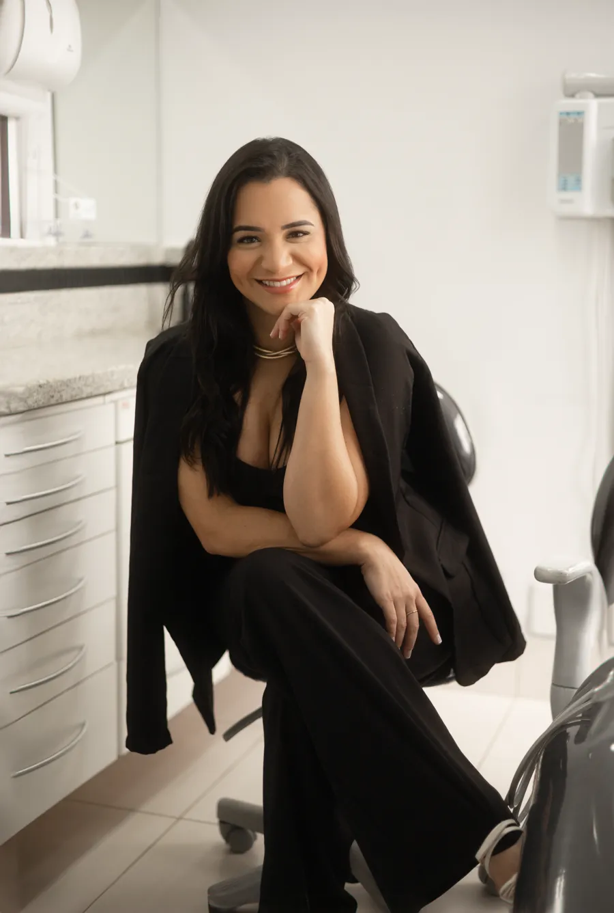
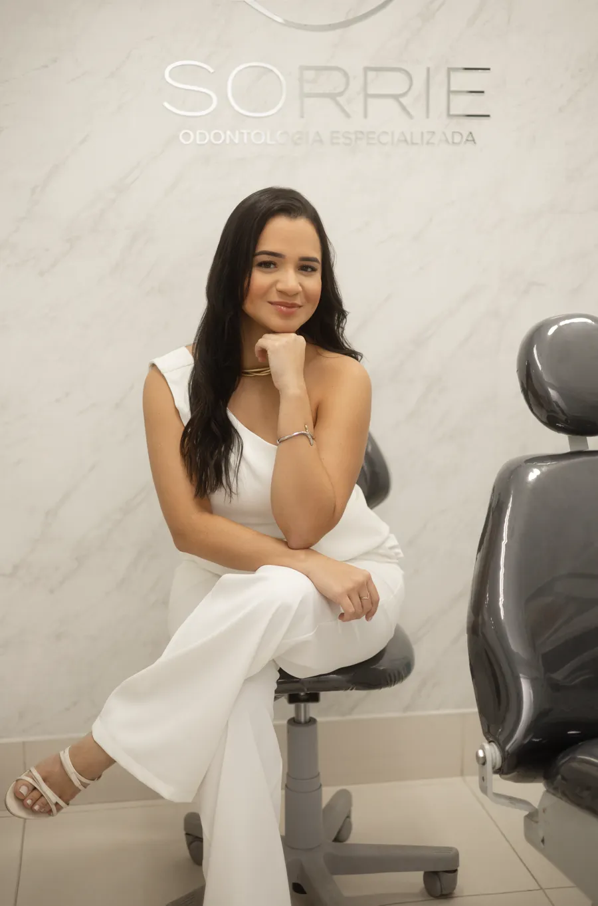

Implante dentário.
Um dente novo, fixo, planejado no digital.
5,0 · 54 avaliações no GoogleRaiz de titânio.
O pino é instalado no osso e, com o tempo, o osso se integra a ele. Esse processo, a osseointegração, forma a base firme para a coroa.¹
Por dentro do osso.
Pino de titânio no osso, coroa sobre ele. Quando há perda óssea, um enxerto pode ser indicado, avaliado caso a caso.
Planejado na tela antes da cirurgia.
Escaneamento digital, exames de imagem quando indicados e plano individual, conduzidos pela Dra. Karine.
Agende sua avaliação com a Dra. Karine ›Fixo. Como um dente.
- Implante: substitui a raiz e a coroa, sem apoiar nos dentes vizinhos.
- Ponte: fixa, mas apoiada nos dentes ao lado, que precisam de preparo.
- Prótese removível: retirada para higienizar e sustentada pela gengiva e pelos dentes restantes.
Conforto do começo ao fim.
A cirurgia é feita com anestesia adequada. O pós-operatório costuma envolver algum desconforto, acompanhado pela especialista.
5,0
no Google
54
avaliações
Enseada do Suá. Sala 901.
R. José Alexandre Buaiz, 160, Ed. London Office Tower, Vitória-ES.
Como chegar ›
Perguntas frequentes.
O que é um implante dentário?
É um pino de titânio instalado no osso para substituir a raiz de um dente perdido. Sobre ele é colocada uma coroa personalizada, devolvendo função e estética ao sorriso.
Como sei se posso fazer implante?
A indicação depende de uma avaliação clínica que considera a saúde bucal, a condição do osso e o seu histórico. Esse diagnóstico é feito na consulta com a especialista.
Quanto tempo dura um implante dentário?
Não existe um prazo fixo: a durabilidade depende de fatores como a saúde bucal, os hábitos do dia a dia e o acompanhamento periódico com a especialista. Boa higiene e manutenção contínua favorecem a estabilidade do implante ao longo do tempo.
Colocar implante dói?
A cirurgia é realizada com anestesia adequada, e o planejamento cuidadoso contribui para o conforto durante o procedimento. O pós-operatório costuma envolver algum desconforto, orientado e acompanhado de perto pela especialista.
Quanto tempo leva a cicatrização e a osseointegração?
Em média, a osseointegração leva alguns meses, podendo variar conforme a região tratada, a condição óssea e as características de cada paciente. Esse prazo é acompanhado individualmente ao longo do tratamento.